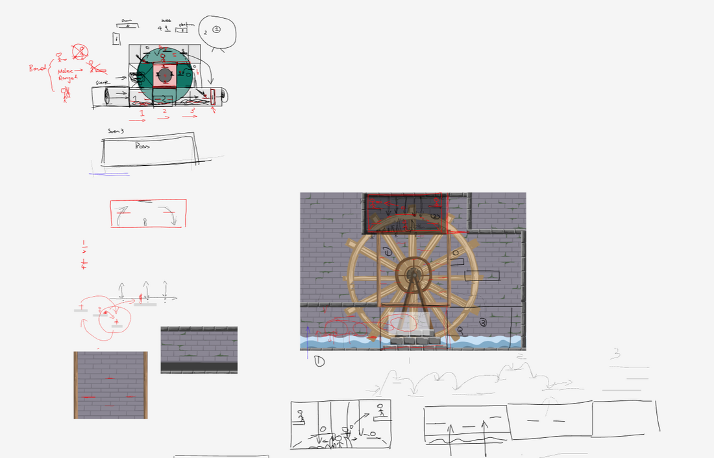
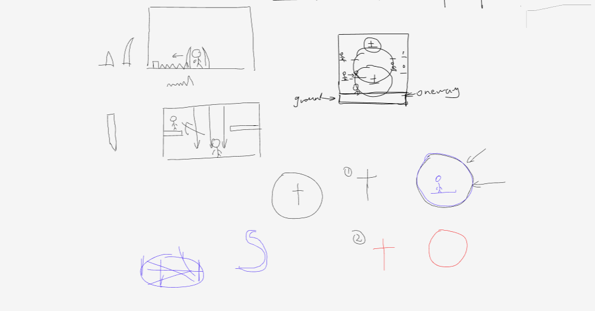
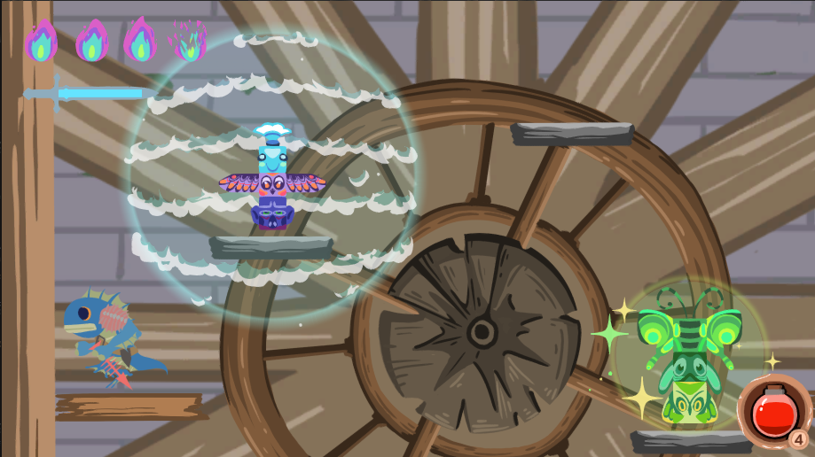
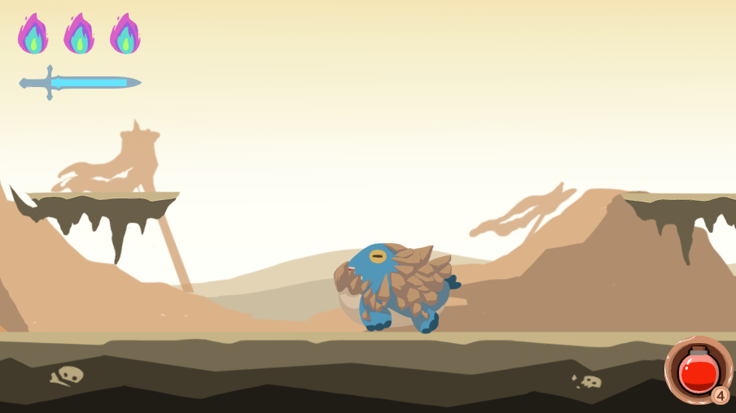
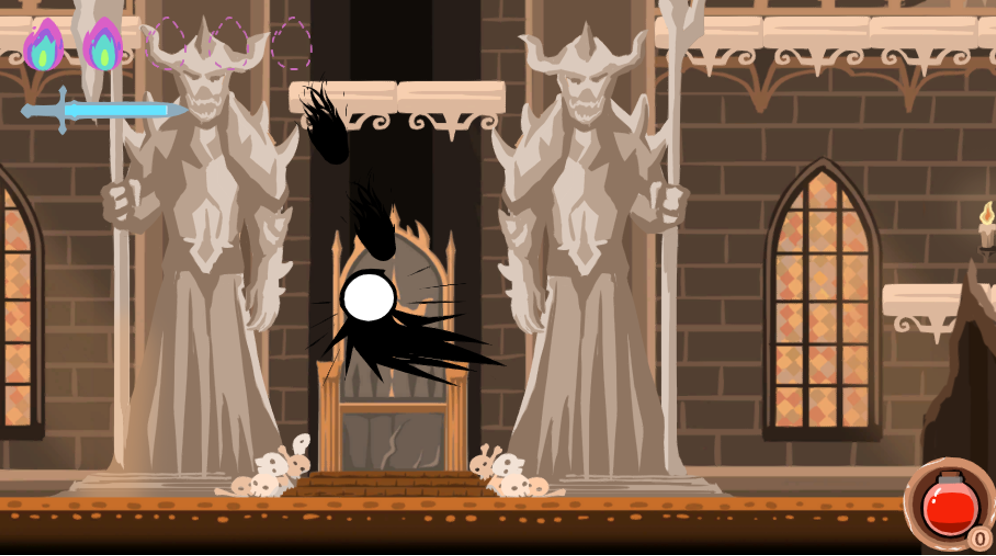

Play it now on Itch.io
This Game Jam challenged us to create a side-scrolling platformer. To make our hero truly unique, we gave them the power of invisibility—only when walking or swinging their sword can the character be seen.
This mechanic proved fiendishly difficult. As a designer, I poured every ounce of effort into reaching the final boss, though I never managed to defeat it.
In my role as designer and team lead, I built the game's maps and acted as the bridge between our programmers and artists. It was our first time working with Unity and participating in a Game Jam, and we encountered plenty of bumps along the way—but in the end, we're proud of what we achieved.
Before jumping into the engine, I drafted the core mechanics, level layouts, and enemy interactions on paper. These design scratches served as the blueprint for our programmers and artists to align on the vision.

Fig 1: Early level layout scratch and mechanic concept.

Fig 2: Enemy behavior and interaction scratch.
Here are some moments from the final build of the game, showcasing the side-scrolling action and the implementation of our invisibility mechanic.

Fig 3: In-game screenshot showcasing the level environment.

Fig 4: Navigating through the obstacles with the invisibility mechanic.

Fig 5: Engaging in combat, where swinging the sword reveals the character.